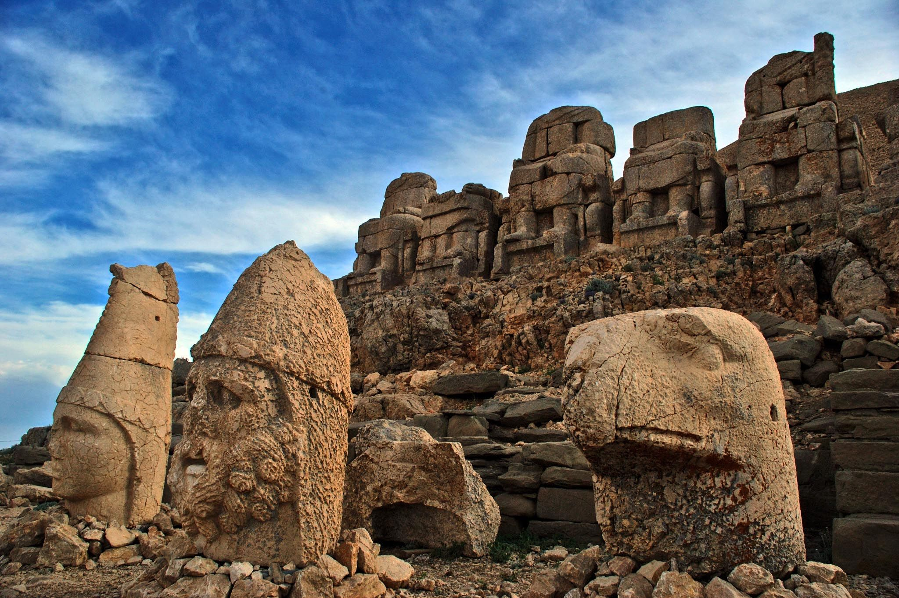

Tarih
Tarih, geçmişteki olayların incelenmesi ve anlaşılmasıyla ilgilenen disiplindir. Tarih, insanlığın kültürel, sosyal, ekonomik ve politik gelişimini araştırır.
Tarih, antik çağ, orta çağ, modern çağ gibi dönemlere ve farklı coğrafi bölgelere odaklanan çeşitli alt disiplinlere sahiptir.
